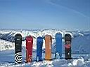
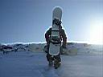
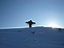
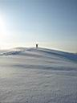
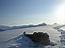
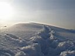
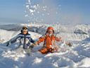
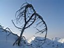
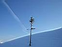
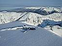

НЕТ! НА МАМАЕ СНЕГА НЕТ!
Или о тех кто зовет себя +
(19-21 января 2007)

.. они взбираются выше трех берез на Мамай
для того что бы взглянуть с вершины на просторы Хамар Дабана и Байкала,
лишь там ощущая полноту жизни они стремятся вниз по самым узким кулуарам
спуская лавины, и получая мощную дозу адреналина они мчатся один за
другим в лагерь где празднуют свой лучший Райдерский день песнями под
гитару и губную гармонь наслаждаясь горячим глинтвейном.
Все как обычно: Зима-сноуборд-палки-лопата-отличная компания Мамайцев:)
Все это прихватили и помчались в сторону Мамая. По дороге заехали в
придорожное кафе "Полина" закинули топливо в желудки и вперед!
Итак: приехали шесть человек 19 января 2007 года в 00:30 на тропу Мамая,
дислоцировались в Кунге в 2:30 ночи.
Субботу и воскресенье мы катали с Мамая и трех берез, фотали и наслаждаясь
тем что еще вчера у каждого были мысли о городской суете, а сегодня
мы живем и в голове нет ни чего кроме доски, гор и любви поэтому каждый
шаг по лестнице Райдеров для нас как очищение и реставрация голодной
души дикого сердца экстримала.





Утро 20 января 10 часов Люба идет тропить "первая" (она надо
заметить на второй день снова повторила подвиг) ведь там хожено было
неделю назад, тропильщики менялись по мере подъема уступая почетную
должность первого тропильщика друг другу, заметка: когда идешь первым,
ну или вторым ты отдыхаешь долше чем последний! Так как доходишь до
трех берез достаешь термос наслаждаешься красотами и тропильщицами,
к тому времени когда подходит последний участник восхождения уже норму
чая выпили отдохнули и вслух выдвигаешь заметку последнему участнику
восхождения "если ты идешь медленно значит ты отдыхаешь, а раз
ты отдыхаешь значит ты не устаешь" (автор слов Иван) и вот так
ни глотка чая и надежды на то что мне удастся отдохнуть я последняя
из двух тропильщиц иду дальше!
Текст: Жекинская :)
Фото: Андрей и Женя
Иркутск, январь 2007



